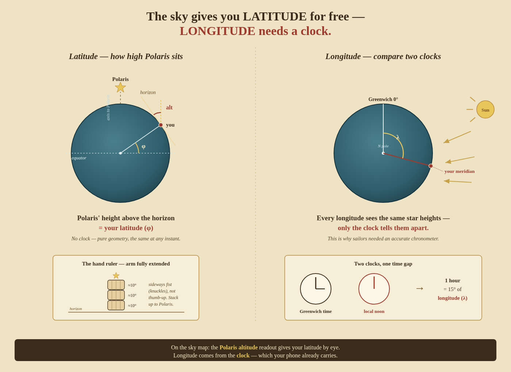

Orientation
Before any instrument or calculation, four ideas from a standing start: what your position actually is, why the sky hands you one half of it for free and makes you work for the other, how to read the height of a star with nothing but your hand, and how the round chart of the sky (the barometer’s all-sky map, or any planisphere) is really the dome overhead, flattened. Everything in the rest of the book is these ideas made precise.

0.1 The problem: two numbers pin any spot on the planet
Earth is a ball. To say exactly where you are, you need two numbers — like coordinates on a grid. Those numbers are latitude and longitude.
- Latitude = how far north or south you are. Measured in degrees from the equator (0°) up to the North Pole (90°N) or down to the South Pole (90°S). Tokyo is about 35°N. Latitude lines run around the globe like stacked hoops — think of the rungs of a ladder (“latitude = ladder”).
- Longitude = how far east or west you are. Measured in degrees from a line chosen by agreement — the Greenwich meridian in London (0°) — going east to +180° or west to −180°. Tokyo is about 139°E. Longitude lines run pole-to-pole like the segments of an orange.
Give both — “35°N, 139°E” — and there is exactly one point on Earth that matches. That’s your position.
0.2 Why they’re not the same kind of problem
Latitude and longitude look symmetric, but they aren’t: latitude is easy, longitude is hard. The reason is the heart of the whole craft.
- North–south (latitude) is fixed in place. Earth’s axis points at the North Pole no matter what time it is, so the sky’s tilt is locked to where you are north–south.
- East–west (longitude) is smeared out by the Earth spinning. The planet turns a full 360° every 24 hours, so the sky slides past overhead — the same stars, just at different times depending on how far east or west you are.
That single difference is why one is readable straight off the sky and the other needs a clock. It runs through the whole book: latitude is Part II, longitude is Part III, and the two are never found the same way.
0.3 Why “height above the horizon” is the whole trick
“Height above the horizon” (altitude) just means how far up something is, measured as an angle. On the horizon = 0°. Straight overhead = 90°. Halfway up = 45°.
The magic fact:
The height of the North Star (Polaris) above the horizon = your latitude.
At the North Pole (90°N) Polaris is straight overhead (90° up). On the equator (0°N) it sits right on the horizon (0° up). Anywhere between, its height equals your latitude — in Tokyo, ~35° up. This falls straight out of the geometry (left half of the picture: the angle up to Polaris and the angle down to the equator are the same angle; Part I, §2 draws it fully).
So “how high is Polaris?” is the question “what’s my latitude?” — measure one, you have the other. No instruments, no clock, the same at any hour of the night. That’s why height-above-the-horizon matters: it’s the one measurement that directly yields a position number. (Part II turns this into the working sights — Polaris, and the daytime noon Sun.)
Is the North Star always visible?
No — and it’s the same fact playing out. Because Polaris’ height above the horizon equals your latitude, its visibility depends entirely on how far north or south you are:
| Where you are | Polaris’ height | Visible? |
|---|---|---|
| North Pole (90°N) | straight overhead (90°) | Yes — at the zenith |
| Tokyo (35°N) | 35° up in the north | Yes |
| Equator (0°) | on the horizon (0°) | Barely — low haze usually hides it |
| South of the equator | below the horizon | No — never visible at all |
So Polaris is a Northern Hemisphere star. Cross the equator heading south and it drops out of the sky entirely — which is why southern sailors use the Southern Cross to find the pole instead; there is no bright “South Star.”
Three things worth knowing:
- In the north it never moves. Polaris stays fixed at true north all night, every night — everything else wheels around it. That’s what makes it the navigation star (when you can see it).
- It is not bright. A common surprise: Polaris is only middling (~2nd magnitude), not the brightest star in the sky. Don’t hunt for a dazzling beacon — find it via the Big Dipper’s pointer stars (see §0.7).
- It still needs a clear night. Cloud, haze, or heavy light pollution hide it like any star; and near the equator it sits so low that a hill or a bank of cloud on the northern horizon will block it.
One line: reliably visible across the whole Northern Hemisphere on a clear night, useless right at the equator, and gone once you are south of it.
0.4 Measuring that height with your hand
You don’t need a sextant for a rough angle — your hand at arm’s length is a usable ruler:
| Hand shape (arm fully extended) | Angle |
|---|---|
| Little-finger width | ≈ 1° |
| Three middle fingers together | ≈ 5° |
| Fist, held sideways (across the four knuckles) | ≈ 10° |
| Splayed thumb-to-pinky span | ≈ 25° |
Use the sideways knuckle-fist, not a thumb-up fist. Stack fists from the horizon up to Polaris and count: three-and-a-half fists ≈ 35° ≈ your latitude. Rough (±a few degrees, and hand-to-arm ratios differ), but enough to confirm a Polaris altitude — and the reason the sextant (Part I) exists is to turn this hand-wave into a hundredth-of-a-degree measurement.
0.5 Why longitude needs a clock
Longitude is east–west, and east–west is tangled up with time (right half of the picture):
- At any moment the Sun is highest — local noon — for whoever is directly under it. As Earth turns, that band of noon sweeps westward.
- So noon happens at different clock-times at different longitudes. When it’s noon where you are, it might be 3 p.m. in Greenwich.
- Earth turns 15° every hour (360° ÷ 24 h). If your local noon is 5 hours behind Greenwich, you’re 5 × 15 = 75° away in longitude.
The formula: longitude = (your time − Greenwich time) × 15° per hour.
This is why you cannot get longitude from star heights: every point along an east–west line sees the same stars at the same heights. The only thing that separates them is what time it is when they see it. You need a clock keeping Greenwich time reliably. For centuries ships couldn’t, and got lost; the accurate marine chronometer solved it (the whole story is Part III). Your phone keeps perfect time, so longitude is free today — but only because of the clock.
0.6 The round chart is your sky-dome, seen from below
Picture a huge piece of fabric draped over you in a perfect dome, you standing dead centre. That dome is the heavens around you — the celestial sphere (Part I, §2), and you only ever see the top half resting on the horizon all around. A circular all-sky chart — the barometer’s sky map, or a cardboard planisphere — is that dome flattened:
- Straight overhead (the zenith) → the centre of the circle.
- The horizon all around → the rim.
- A star halfway up the dome → halfway between centre and rim.
So distance from the rim = how high a thing is (altitude); position around the rim = its compass bearing.
One subtlety worth getting right: the chart is the dome as seen from inside, looking up — not flattened and viewed from above. Those two are mirror images, and a good sky chart draws the one that matches your eyes. The tell: N is at top, S at bottom, but E is on the left and W on the right — the mirror of a paper map. That’s deliberate — it’s the planisphere convention, printed so that when you hold it up toward the sky and look up at it, it agrees with the real stars. Lay it flat on a table like a map and east–west would read reversed. (The barometer’s own sky chart is drawn to exactly this convention.)
0.7 Orienting the dome — anchoring to real stars
A chart is only useful once you’ve locked it to the real sky. The rule:
Match two unmistakable objects and the whole dome is fixed. One object only pins a direction; a second (well away from the first) also pins the rotation. Equivalently: one direction (true north) plus one object does the same job.
Anchors, easiest first:
- The Moon. If it’s up, it’s unmistakable, and a good chart draws it with its current phase at its real spot. One free anchor, no star knowledge needed.
- Bright planets. Venus and Jupiter can outshine everything; Mars is orange. The giveaway: planets shine steadily, stars twinkle. Moon + a bright planet = two anchors, and you needed to recognise nothing.
- Polaris — hands you north outright. Find it and rotate the chart so its N points at it; the whole dome is then oriented. To find it from zero: locate the Big Dipper (a saucepan of 7 bright stars), follow the two “pointer” stars at the end of the pan’s bowl ~5 fist-widths to a lone medium star — that’s Polaris. (If the Dipper is below the horizon, the W of Cassiopeia sits opposite Polaris and points back to it.)
- Signpost shapes, once you know a few: Orion’s three-in-a-row Belt (winter), the big Summer Triangle, the Southern Cross (southern skies). On a chart with constellation lines, a shape you recognise overhead matches on screen at once.
The move (with a phone chart):
- Pick your brightest, most certain object (Moon → bright planet → signpost).
- Hold the phone up toward it, screen facing you.
- Rotate the phone until that object on screen points the same way as the real one.
- Find a second bright object well away from the first and check it lines up too. Both match → the dome is locked and the rim’s N/E/S/W point true.
- Second one off? You matched a look-alike — re-pick a brighter anchor and retry.
If nothing matches: you’re usually facing a look-alike (re-pick a brighter, certain anchor), the sky is partly clouded (one bright planet + Polaris is enough), or you matched only one object and the rotation is still loose — always get that second anchor.
0.8 Steering by the oriented chart
Once the dome is locked to the real sky (§0.7), the chart becomes a steering instrument — its rim is now a true compass:
- Read the course. Find the way you want to go on the rim; its position around the rim is a true bearing (north at top, and remember E is on the left, W on the right).
- Confirm north. Polaris on the chart sits at true north — face it and you face north for real (§0.3). Its height also equals your latitude, a free check that you oriented correctly.
- Turn the true bearing into something you can hold. A magnetic compass does not point to true north, so a true course must be corrected for variation (and, aboard a vessel, deviation) before you steer it — the full rule is the compass work of Part V. Simpler with no compass at all: pick a star sitting on that bearing, low on the horizon, and steer toward it — a steering star, the heart of the star-compass of Part VII.
- Re-check often. The sky turns about 15° every hour, so a live chart drifts under the real stars; re-orient, re-find Polaris, and choose a fresh steering star every fifteen or twenty minutes.
That is the whole loop a chart-user runs — orient → read the bearing → steer it (by compass or by a star) → re-check. The rest of the book makes each step precise, but you can do this tonight with your eyes and the round chart alone.
One line to carry into the rest of the book: Latitude = how high the pole star sits (read it off the sky). Longitude = how your clock differs from Greenwich (read it off the time). Two numbers, two completely different tools.